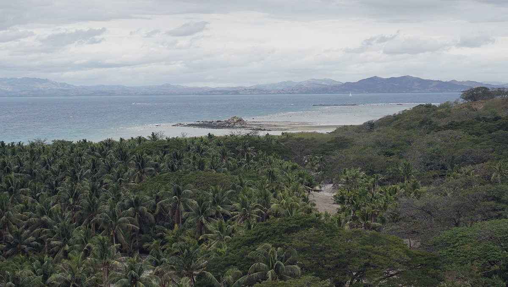
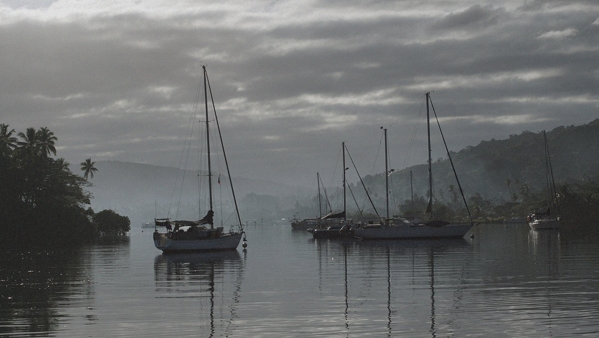
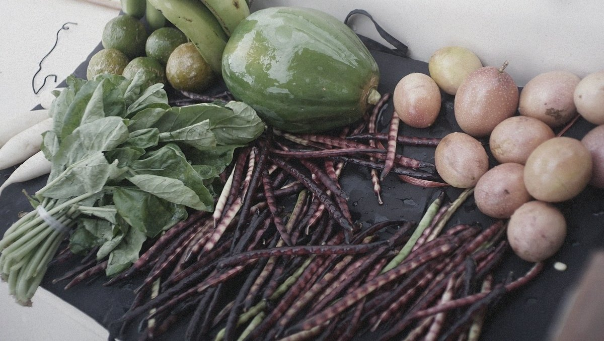
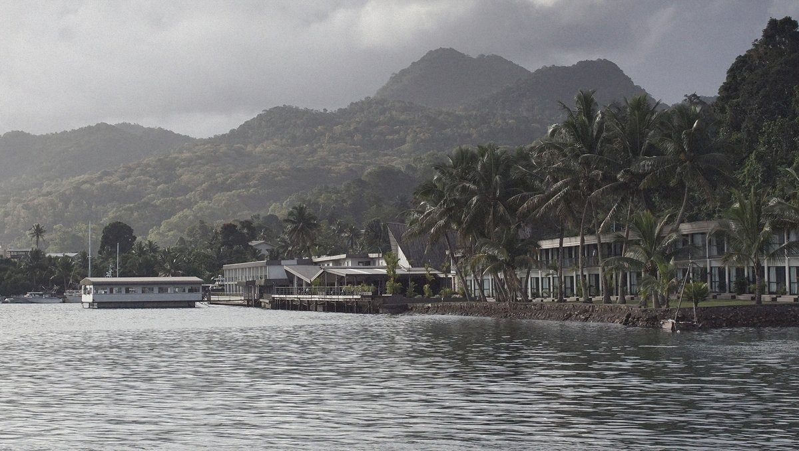
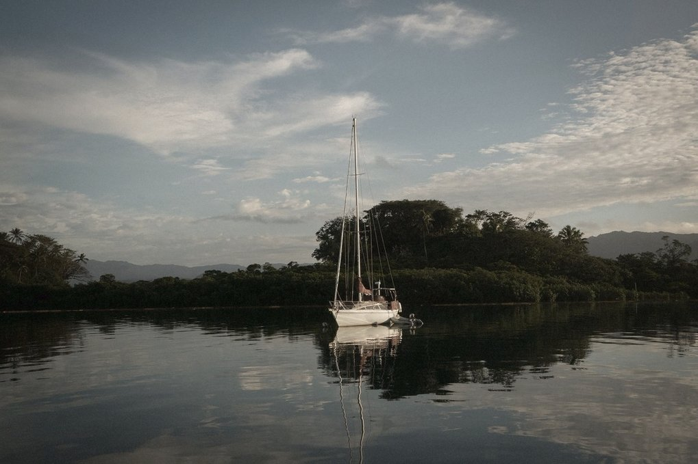
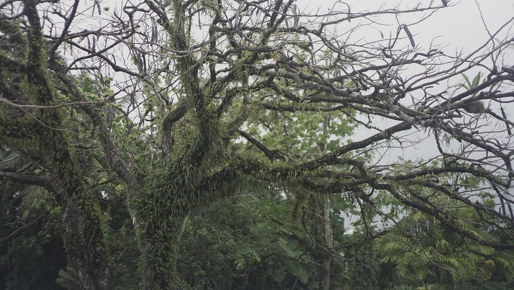
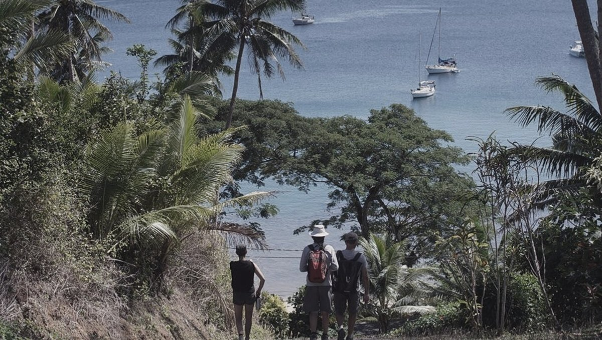

fiji
In late June, we sailed to Fiji and stayed for 4 months. The sail to Savusavu took 15 days from New Zealand, it was a slow ride because of contrary winds.
We experienced complete stillness on the ocean, for the first time.

We stayed in Savusavu for 2 months, comfortably moored in Nakama Creek. We had a fresh food market nearby, plenty of places to walk to, and easy access to kava. We liked eating out at a Korean restaurant in town, that is until we learned it was run by a homophobic doomsday cult. Along with friends, we drove up to Labasa for a visit and saw the interior of the island with a landscape that was entirely different (we saw some coniferous trees).
The internet situation in Fiji was very good. Data was cheap, and there were cell towers everywhere.
Eventually, we moved down to the island of Makogai, a former leper colony and island without a chief. The bay was deep, but we found some room near the pier (although a very large bommie sat under our keel and we didn't enjoy the experience). The wind blew hard one night, but we stayed put. We visited the giant clam farm and hiked around the island. It is here that an accident caused irreparable damage to iggy. Then, we hopped over to the tiny paradise island of Leleuvia, to wait for a weather window to move to Suva.
Near Suva, we found protection in a small bay near Lami, not too far from downtown and tucked between many small islands. We'd heard the downtown anchorage wasn't ideal in bad weather, it was exposed and the bottom floor had a lot of debris, too many things an anchor can snag on. We tied to a mooring near shore. At low tide, the water was so shallow that it was easy for kids to swim to the boat. They'd use the boat as a marker, swimming from Pino to shore, racing against each other. We spent a week in Lami, busy mending Iggy. While the dinghy was recovering on deck, a local lent us a hard dinghy so we could get to shore. We walked to the nearby fresh food market in Lami often, to buy fresh mini pineapples, papayas and cooking bananas.
Our next stop was Momi Bay, we used it as a stop-over before going to Malolo Lailai. In the end, a ring of fire formed on a hill. The passage to Malolo Lailai was dotted with reefs, it was best done under a high noon sun. The anchorage was very busy and near full, but we found a mooring spot not too far from the dinghy dock. We went to land often to share drinks with friendly sailors, or to swim in the shallows. We also brought our bicycles on land and went around the dirt roads surrounding the island.
Our last stop in Fiji was Vuda Point Marina, where we stocked up for the passage north to the Marshall Islands. Lautoka was a short bus ride away. In the marina, Pino was sandwiched between boats, bow tied to shore with the stern leading to a mooring. Vuda Point Marina was a circular marina, with all of the boats sitting side to side, fender to fender.
Our favorite food there was taro root and passion fruit, we also liked buying fresh turmeric.
Blog posts about our stay in Fiji:
While in Fiji, we worked on Orca.
    